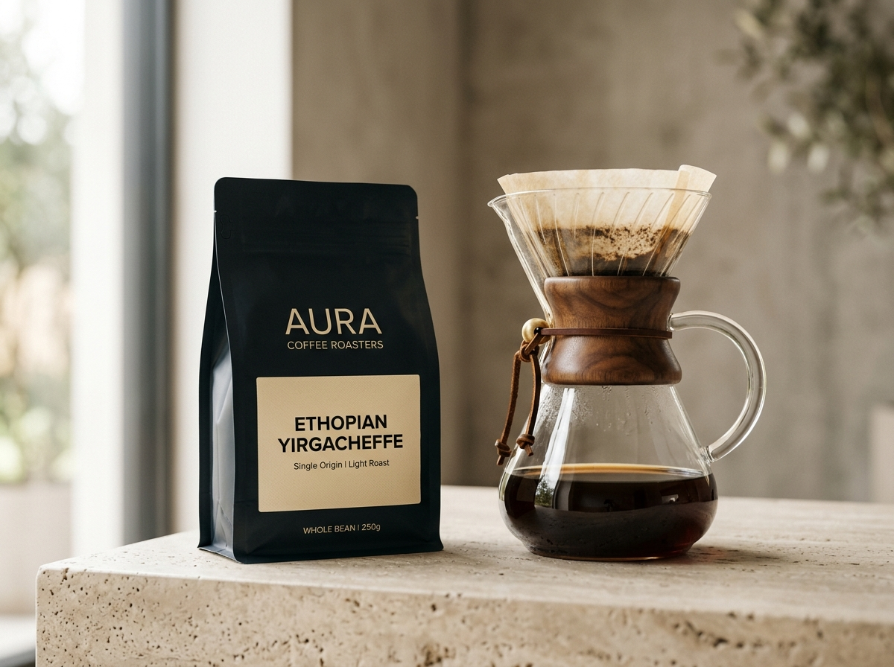
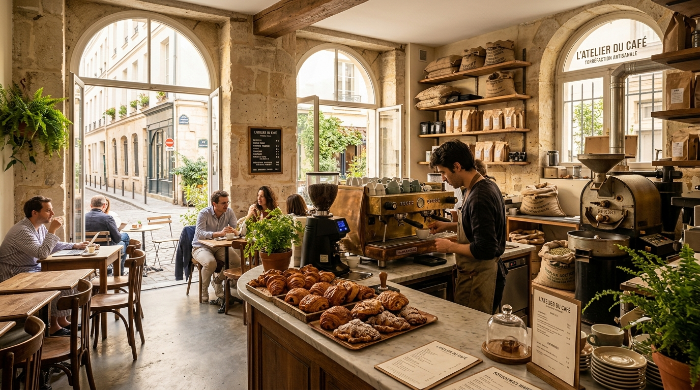
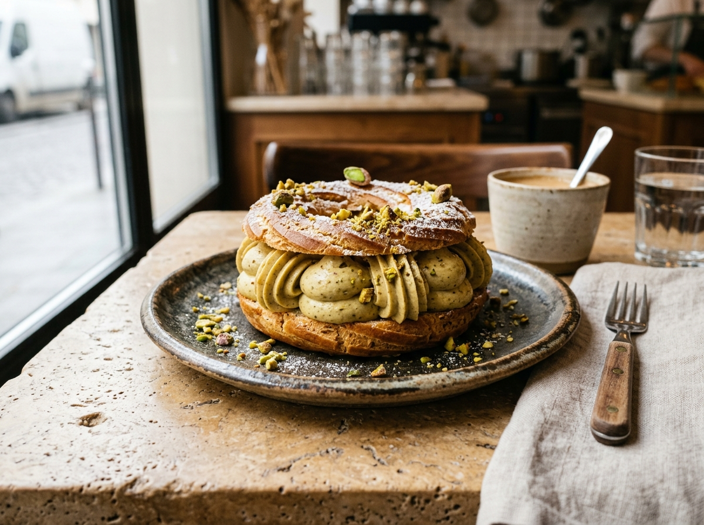
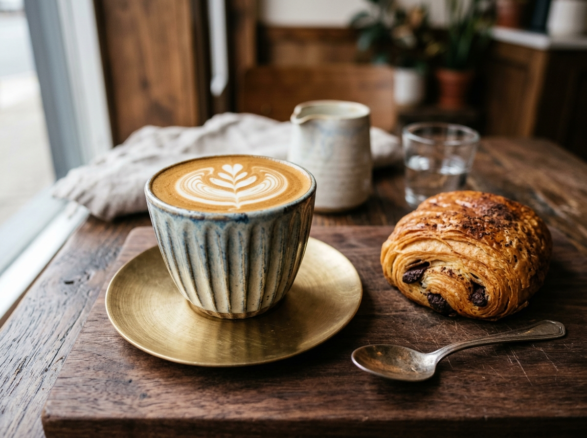
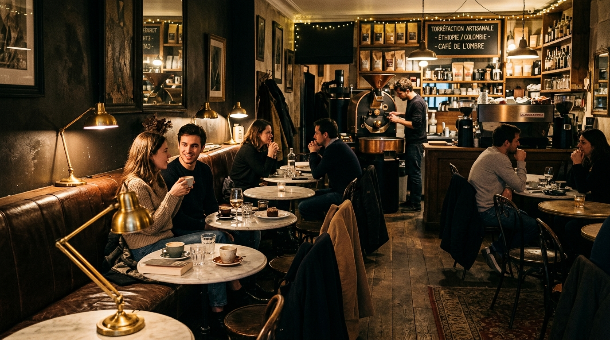

Ethiopia Yirgacheffe Halo Beriti
Washed Lot · Bergamot, White Peach & Jasmine Blossom
Every Tuesday and Friday morning, our Loring convection roaster brings single-estate coffees from Gedeb, Huila, and Antigua to peak clarity—paired in our limestone salon with warm choux craquelin and Charentes-Poitou viennoiserie.
87.5+ SCA Cupping Standard Same-Day Paris Bike Courier Click & Collect in 30 Mins


Washed Lot · Bergamot, White Peach & Jasmine Blossom

Choux Craquelin · Roasted Pistachio Mousseline & Praline Core

Double Ristretto Moka Blend · Velvety Microfoam & Valrhona Viennoiserie
Unlike conventional dark roasts that mask terroir behind carbonized bitterness, Maison Moka roasts each single-origin lot to highlight its natural organic acids and fruit sugars. Every batch is logged with bean-probe telemetry and cupped within 18 hours of roasting.
We partner directly with washing stations in Gedeb (Ethiopia), Pitalito (Colombia), and Sacatepéquez (Guatemala), paying an average farm-gate premium 38% above commodity benchmarks for 87.5+ point micro-lots.
Our brew bar utilizes reverse-osmosis water remineralized with magnesium and bicarbonate to 75 ppm total hardness, ensuring balanced extraction across V60 pour-overs and 9-bar espresso shots.
Led by Chef Pâtissier Claire Vasseur, our pastry kitchen laminates Charentes-Poitou AOP butter doughs over 48 hours and pipes roasted Bronte pistachio mousseline fresh for morning and afternoon salon seatings.

Join us in our warm limestone salon, at the interactive slow-bar counter overlooking our vintage brass roaster, or in the sheltered courtyard garden. Table reservations include priority patisserie selection and guided filter flights.